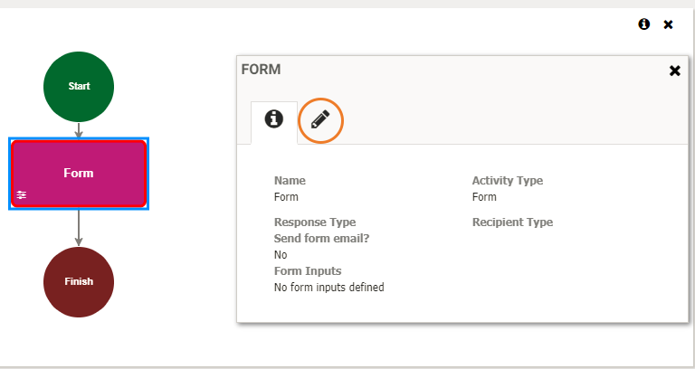
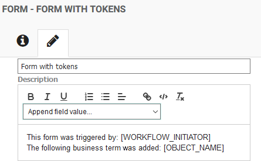
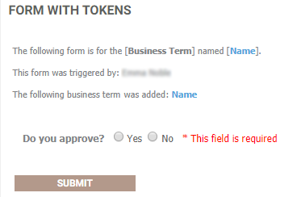
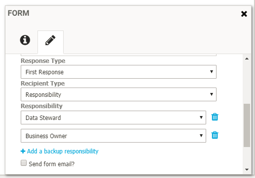
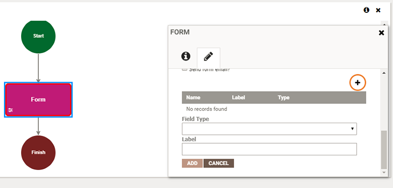

|
|
Creating a form
When creating a workflow, you have the option to include a Form activity. The Form activity allows you to create a custom form that can be emailed to a user as part of your workflow. For example, you could create a form for approving or rejecting a change to a Business Asset, where a reviewer has the option to accept or decline a change and add a comment.
You can access the workflow editing page by clicking the Administration icon on the left of the screen and selecting Workflow > Workflow. For more information on creating a new workflow, see Establishing workflows.
If you are building a new workflow that includes a Form activity, you can customize your form as follows:
- Select the Form activity, then in the Form panel, click the Edit tab to set up the form:

Tip: If the Form panel does not open automatically, select the Form activity, then click the Information icon

- Type a Name and a Title for the form, e.g. "Do you approve?". The name and title can be the same, but note that the Name is included in the Workflow Details page, whereas the Title is shown on the form itself when it is accessed from an email or from the My Assignments panel.
- Add a Description. You can add specific details to your form description by selecting a token from the Append field value list. For example, you could include the name of the person who triggered the workflow and the object that the workflow was raised against:

The tokens will be replaced by the relevant workflow details for the user who completes the form, for example:

For more details about the different tokens, see Configuring email notifications.
- Select a Response Type to determine what has to happen before the workflow can progress to the next step. Choose from:
- First Response - The first person who submits the form will cause the workflow item to move on to the next step.
- Majority - The majority of the users that receive the form must submit the form before the workflow item moves on to the next step.
- All - All users that receive the form must submit the form before the workflow item moves on to the next step.
- Select a Recipient Type to determine who the form should be sent to. Choose from:
- Initiator - The form is sent to the individual who initiated the change.
- Responsibility - The form is sent to all individuals who have been assigned to a particular role.
If you select this option, a second Responsibility field will appear where you can select the name of the responsibility, such as Data Steward or Business Owner. You can click Add a backup responsibility to define a second responsibility type. In this case, the system will initially look for users assigned to the first responsibility, but if there are no users assigned to that responsibility, the system will look for users assigned to the second responsibility and send the form to them instead. For example, if there are no Data Stewards, send the form to the Business Owner:

- Specific User - The form is sent to a specific email address. When this option is selected, a conditional Recipient field will display where you must supply the email address of the individual or group e.g. user@example.com, or financeusers@example.com.
- To send an email notification along with the form, select Send form email?. The email will be sent to the specified recipient, whether that is the Initiator, Specific User or Responsibility. Note that you only need to type an email address when you select Specific User, if you select a different Recipient Type, the relevant email address will be identified by the system.
If you select Include previous form responses, the information from any forms completed in a previous step of the workflow will be included in the email. This option only applies if your workflow contains a preceding Form activity.

Tip: If you have selected Send form email? the relevant recipient will receive an email each time a new form assignment is triggered. If you want to control the number of assignment emails that are sent to users with outstanding tasks, you can group a user's open tasks into one daily workflow summary email. See Sending workflow assignment emails. If you choose to enable workflow summary emails, to avoid repeat emails, do not select Send form email?.
- Type the text of the email in the Body field, and the email subject in the Subject field. For more information on configuring the body of the email and using tokens as placeholders for variable text, see Configuring email notifications.
- If the workflow trigger is an Action Type, there are two additional options when creating a form:
- Allow Resource Reassignment - Select this option to allow the user filling out the form to reassign the form to another user. If the user reassigns the workflow item to another user the form will be moved from the current user's My Assignments list to the new users My Assignments list.
- Allow Object Reassignment - Select this option to allow the user filling out the form to reassign the workflow item to a different asset. For example, if an action type was raised on an incorrect asset, the user can reassign the issue reported to another object. In this case, if a user selects another object and reassigns the issue, the workflow will restart from step one with the new object.
- To customize the form further, you can add additional fields by scrolling to the bottom of the Form panel and clicking the Add button:

- Select a Field Type. Choose from the following options:
- boolean - A data type with two possible values. Allows you to add a "Yes / No" question to your form. Type the question that you want the recipient to answer in the Label field, for example "Do you approve?".
- integer - A whole number that can be positive, negative, or zero.
- text - A free form string of alphanumeric characters. For example, you "Explain why you approve / do not approve".
- date - A date in a recognized date format.
- list - The list field is specific to the trigger of the workflow and allows the user to select any reference or lookup list field defined on the Action Type or Object. If the trigger is on an Action Type, the Action reference or lookup list fields are available on the Form. If the trigger is on an Object that has been added or changed, then the object reference or lookup list fields are available on the Form. The selection on the Form can be used then to conditionally transition to the next workflow step or used with the Field Change Activity to update the Action or Object with the values entered.
- relationshipType - A relationship between Business Assets, for example,
[contains] Glossary :: Report. The recipient of the Form will be able to choose from a list of relationship types for which the asset is a subject or object. This is used in conjunction with the Relationship Change workflow activity.Note: The relationshipType field only appears on non-action type workflows triggered by a certain asset type (such as Business Term added).
- Add a Label for the new field. For example, if you are adding a new boolean type field, you could label the field "Approve?".
- Click Add.
- Select a Field Type. Choose from the following options:
See: